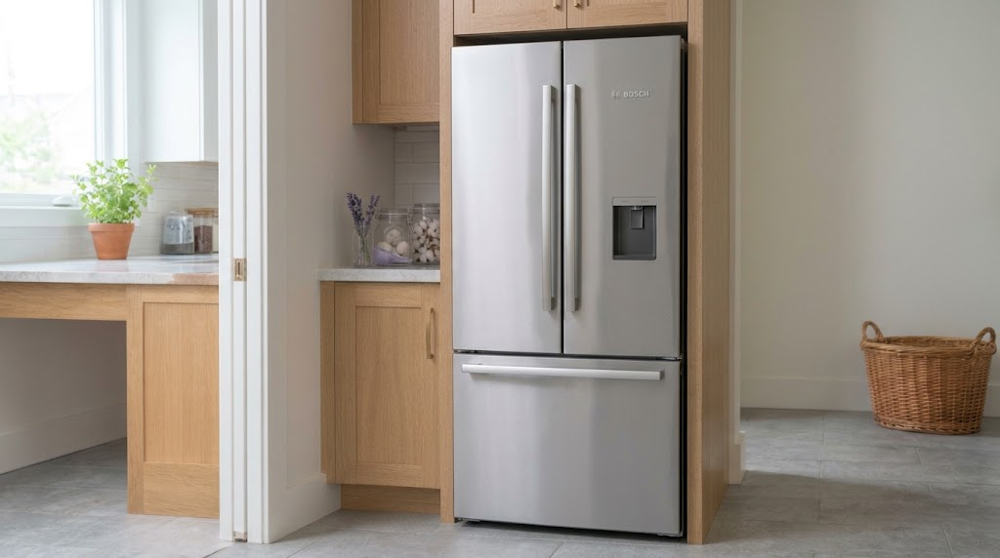
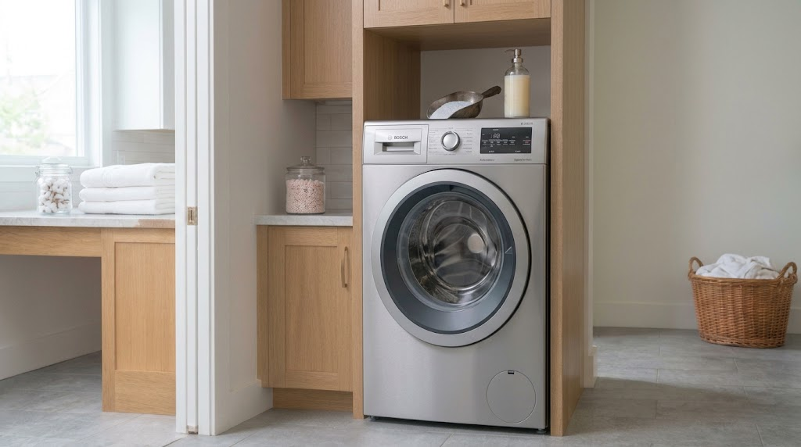
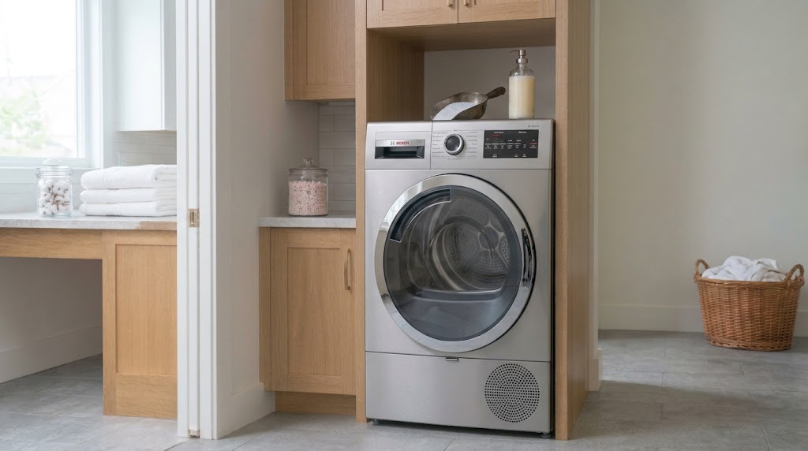
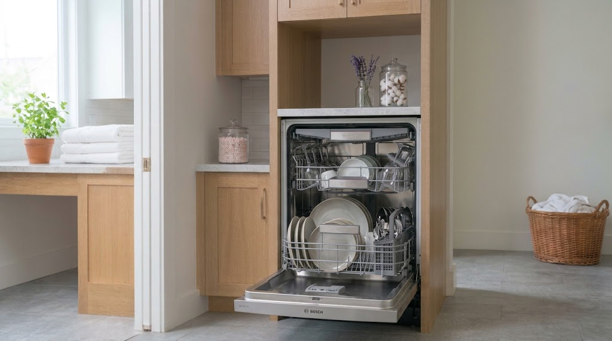

Precision On-Site Bosch Appliance Repairs in Gauteng
Certified technician dispatch for Bosch Series 2, 4, 6, 8 & Home Professional lines. Expert repair for EcoSilence washing machines, VitaFresh fridges, Heat Pump dryers, and PerfectDry Zeolith dishwashers using 100% factory-original Bosch OEM parts across Sandton, Randburg, Midrand, and Rosebank.
Genuine Bosch Factory Parts
100% OEM Replacement Components
- 6-Month Written Warranty on Parts & Labor
- Inverter & AquaStop Sensor Calibration
- Stocked Motors, Heat Pumps, Valves & PCBs
- Series 2, 4, 6, 8 & Built-In Specialist
Precision On-Site Servicing for Bosch Series 2 to Series 8 Systems
Bosch appliances are renowned worldwide for precision German engineering—from EcoSilence Drive brushless motors and VitaFresh climate control to PerfectDry Zeolith minerals and AquaStop leak protection. Diagnosing these advanced systems requires specialized digital equipment and genuine components.
Eazy Appliance Repairs delivers rapid mobile technician dispatch across Sandton, Randburg, Midrand, Rosebank, and wider Gauteng. We stock 100% factory-original (OEM) Bosch replacement parts and cover every service with our written 6-Month Guarantee on Parts & Labor.
Quick Bosch Assessor
Select your Bosch unit line for immediate diagnostic details
Full inventory of original Bosch NTC temperature sensors, defrost heating elements, inverter compressor relays, and electronic control modules carried directly in our mobile units.
Book Fix For This UnitSpecialized On-Site Bosch Repairs Across Gauteng
We deliver factory-spec diagnostics and genuine replacement parts for all Bosch Series 2, 4, 6, 8, and Home Professional lines across Sandton, Randburg, Midrand, and Rosebank.

VitaFresh Pro & NoFrostBosch Refrigerator & Freezer Repairs
Complete repair services for Bosch Series 4, 6, and 8 VitaFresh, Freestanding, Built-in, and French Door refrigerators. We specialize in inverter linear compressors, defrost heater assemblies, and NTC temperature sensors.
Not Cooling (E01): Indicates a main thermistor sensor error or fan motor obstruction. Resolved on-site in 45–60 mins.
Clicking / Relay Fault: Inverter compressor relay switch struggling under load-shedding surges. Instant relay replacement restores cooling.
Defrost / Ice Build-up: Defrost heating element open-circuit or faulty thermal fuse. Fixed with original Bosch OEM spare parts.
Bosch Washing Machine Repairs
On-site technical support for Bosch EcoSilence Drive, i-DOS, VarioPerfect front-loaders and top-loaders across Series 4, 6, 8, and Home Professional. We fix drum motor errors, pump obstructions, and door locks.
Pump Drain Error (E18): Caused by coin/debris trap blockage or failed drain pump motor. Cleared or replaced on-site with OEM parts.
Door Latch (E16/F16): Electronic door interlock switch failure or mechanical latch misalignment. Replaced with original Bosch interlock.
AquaStop Trigger (E23): Internal hose or tub seal leak triggering safety float switch. Resealed and safety sensor cleared.

EcoSilence Drive & i-DOS
Heat Pump & SelfCleaningBosch Tumble Dryer Repairs
Certified maintenance for Bosch Series 6 and Series 8 Heat Pump dryers, Condenser dryers, and Vented units. We resolve heating cuts, drive belt snaps, and lint filter sensor errors across Gauteng.
Not Heating: Tripped thermal switch or defective heat pump compressor start capacitor. Replaced on-site using original Bosch parts.
Drum Not Turning: Snapped poly-V drive belt or worn idler pulley bearing. Repaired within an hour on location.
Filter Full (E56): Condenser airflow obstruction or clogged duct sensor. Full system flush and sensor reset performed.
Bosch Dishwasher Repairs
Specialized technician support for Bosch Series 2, 4, 6, and 8 PerfectDry (Zeolith), SilencePlus, and AquaStop dishwashers. We fix E15 base leak triggers, heating errors, and drain pump faults.
AquaStop Leak (E15): Base tray safety float sensor activated due to sump gasket or valve leak. Resealed with factory replacement gaskets.
Heat Pump Error (E09): Integrated heating element failure inside the heat circulation pump. Swapped with OEM Bosch heat pump motor.
Drain Error (E22/E24): Non-return valve blockage or worn drain pump impeller. Cleared and tested on location.

PerfectDry Zeolith & AquaStopAdvanced EcoSilence & Inverter PCB Diagnostics On-Site
Bosch brushless EcoSilence motors and digital control modules require specialized digital testing tools. Our mobile technicians carry diagnostic gear to calibrate Bosch microprocessors and resolve electronic sensor faults right at your home.
Genuine Bosch Factory OEM Spares
Certified German-engineered factory components for long service life
-
Backed by 6-Month Written Warranty Complete peace of mind covering both fitted original parts and technical labor.
-
EcoSilence Motor Inverter Calibration Precise frequency pulse alignment ensures silent operation and energy efficiency.
-
AquaStop Safety Valve Integration 100% genuine dual-solenoid safety valves maintain factory flood prevention standards.
The Risk of Generic Knockoffs
Why imitation spare parts lead to premature breakdowns
-
Frequent E15 & E18 False Errors Uncertified sensors trigger persistent AquaStop error codes and drain pump shutdowns.
-
Main PCB Board Short Circuits Mismatched electrical resistance can fry expensive Bosch electronic control modules.
-
Unstable Power Surge Resistance Imitation relays lack voltage regulation needed during South African grid load shedding.
Bosch Appliance Error Code Diagnostic Guide
Is your Bosch Series 2, 4, 6, or 8 appliance flashing a fault code or error light? Use our instant lookup tool to identify the issue and recommended technician fix.
| Appliance | Error Code | Diagnosed Issue | Recommended Technician Fix | Action |
|---|---|---|---|---|
| Dishwasher | E15 |
AquaStop Safety Float Switch Activated (Base Leak) | Drain base pan water, inspect sump gasket and hose connections, replace leaking seal. | Book Fix |
| Dishwasher | E09 |
Heating Element / Heat Pump Circuit Fault | Test heat pump heater winding resistance, swap failed integrated heat pump assembly. | Book Fix |
| Dishwasher | E22 / E24 |
Drainage Obstruction / Impeller Blockage | Clear food debris from sump filter, inspect non-return valve, test drain pump motor. | Book Fix |
| Dishwasher | E14 |
Water Inlet Flow Meter Sensor Fault | Inspect water inlet valve filter screen, test reed switch flow sensor, replace flow meter. | Book Fix |
| Washer | E18 / F18 |
Drain Pump Obstruction / Timeout | Clear coin trap filter, check drain hose for kinks, replace worn EcoSilence drain pump. | Book Fix |
| Washer | E16 / F16 |
Door Interlock Lock Mechanism Fault | Check door catch alignment, test electronic door lock solenoid, replace latch unit. | Book Fix |
| Washer | E23 / F23 |
AquaStop Leak Sensor Triggered | Inspect tub seal and inlet hose connections, dry base float, replace defective hose. | Book Fix |
| Washer | E29 |
Water Supply Inlet Timeout | Check home water pressure, clean inlet valve mesh filter, replace solenoid valve. | Book Fix |
| Fridge | E01 / E02 |
NTC Temperature Sensor Circuit Error | Test thermistor resistance, inspect wire harness continuity, swap faulty temperature sensor. | Book Fix |
| Dryer | E56 |
Condenser Airflow Restriction / Filter Full | Flush heat pump condenser, clean lint filter ducting, calibrate airflow sensor. | Book Fix |
Same-Day Bosch Repair Mobile Vans Across Gauteng
Our mobile units travel daily through Sandton, Randburg, Midrand, Rosebank, and surrounding areas fully stocked with original Bosch Series 2, 4, 6, and 8 OEM spare parts.
Bosch Primary Mobile Hubs
Technicians on standby in your area for fast on-site dispatch:
Check Bosch Van Status
Select your area and appliance type for immediate dispatch status
Need Urgent Bosch Appliance Repair in Gauteng?
Connect directly with our Bosch technical desk or request a priority callback. Our mobile vans operate daily across Sandton, Randburg, Midrand, and Rosebank stocked with genuine EcoSilence motors, AquaStop valves, and VitaFresh sensors.
- 6-Month Written Warranty on Parts & Labor
- 100% Factory OEM Bosch Replacement Parts
- Upfront Fixed Quotations — No Surprise Fees
Request a Bosch Repair Callback
Submit your details for a priority technician callback within 15 minutes.
Frequently Asked Bosch Repair Questions
Everything you need to know about our specialized Bosch support, genuine spare parts sourcing, and on-site servicing across Sandton, Randburg, Midrand, Rosebank, and wider Gauteng.
Yes. We exclusively fit 100% factory-original (OEM) Bosch replacement components sourced from authorized brand distributors. From EcoSilence Drive brushless motors and NTC temperature sensors to AquaStop dual-solenoid valves and Zeolith fan assemblies, we never fit generic knockoffs.
Absolutely. Our mobile units carry specialized computer diagnostic equipment to analyze digital fault logs, calibrate electronic control boards, replace defective components, and reset fault codes (such as E15 AquaStop leaks, E09 heating faults, or E18 drain pump blocks) right at your home.
Yes. We specialize in out-of-warranty and post-warranty Bosch repairs across Series 2, Series 4, Series 6, Series 8, and Home Professional models. Every completed repair comes with our own written 6-Month Warranty covering both installed replacement parts and technician labor.
Our mobile service vans operate daily across major Gauteng hubs, enabling same-day emergency technician dispatch with typical arrival times of under 60 minutes depending on your suburb.
Yes. Our technician conducts a physical inspection on-site and provides a fixed, itemized written quotation before performing any repair work. There are no surprise costs or hidden fees.